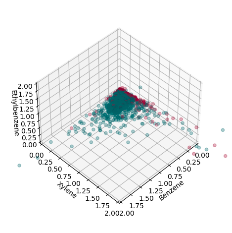
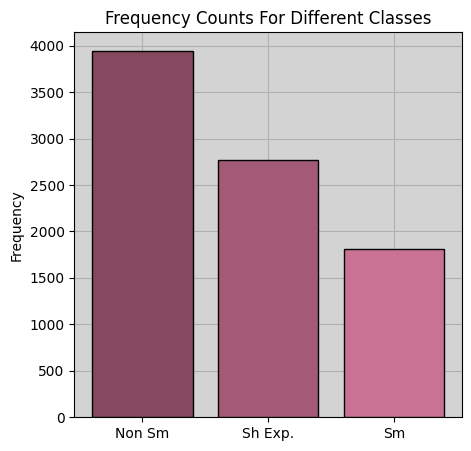
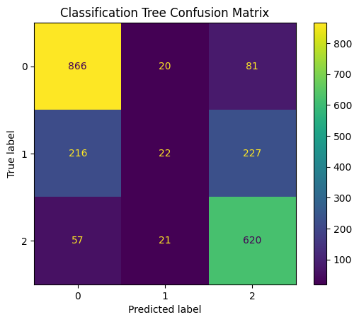
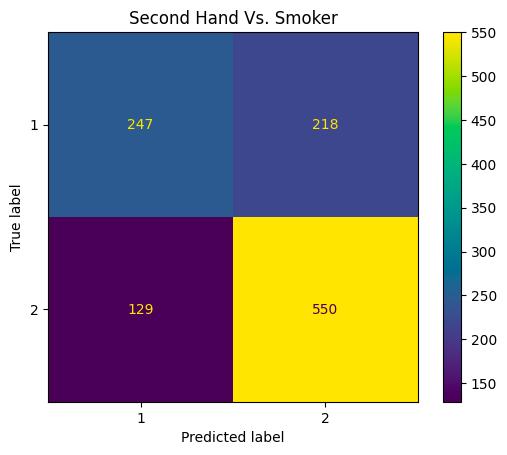
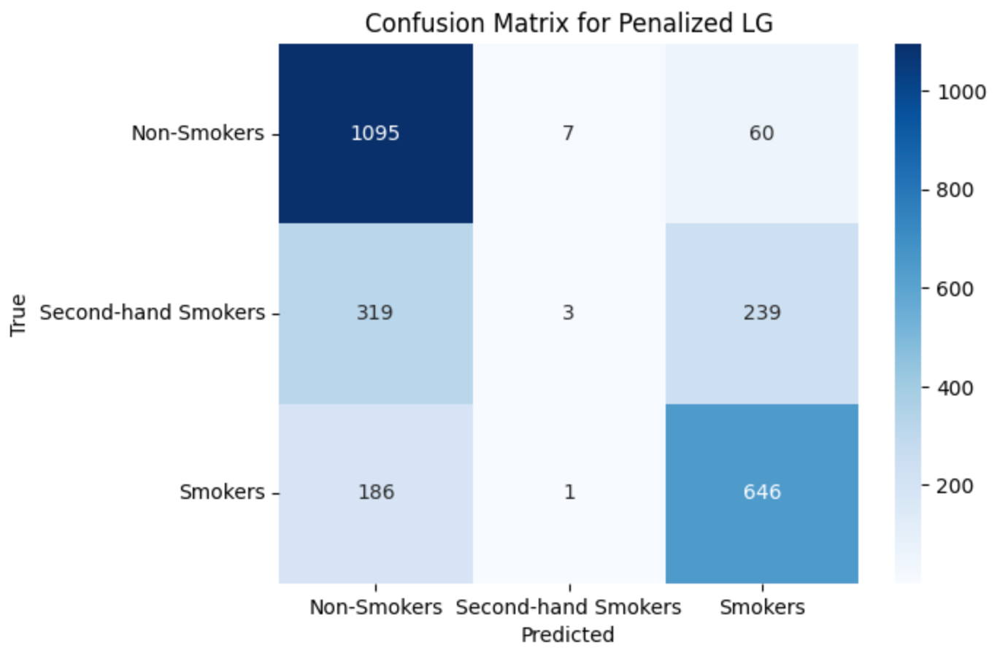

VOC Analysis
Investigation of the presence of volatile organic compounds (VOCs) in human blood samples and their relationship with various levels of exposure to tobacco products

Authors: Pete Pritchard, Omar Afifi, Xiangru Pan
We investigate the presence of volatile organic compounds (VOCs) in human blood samples and their relationship with various levels of exposure to tobacco products. Our analysis demonstrates that, while not as exaggerated as might be expected, there is a significant relationship between VOC concentrations and exposure levels. By analyzing the results from our models, we also can draw conclusions about the difference in effect between second-hand and direct tobacco usage. We accomplish this objective by leveraging interpretable statistical learning models and thorough data analysis.
Introduction
Volatile Organic Compounds (VOCs) are organic chemicals that humans are frequently exposed to. VOCs are commonly found in directly ingestible products like tobacco, as well as non-ingestible items like paints and detergents. Studying VOC levels in humans is important for a number of reasons including health monitoring, disease diagnosis, environmental exposure assessment, and biological research. Moreover, specific VOC patterns or signals may be associated with particular diseases or illnesses, which allows for quick, non-invasive diagnostic practices. This can be particularly valuable in cases where traditional diagnostic techniques are invasive, costly, or impractical. Consequently, understanding the impact of human VOC exposure holds great promise for the betterment of patient care, disease control, and biomedical research.
This analysis utilizes survey and blood sample data from the National Health and Nutritional Examination Survey (NHANES), provided by the Center for Disease Control (CDC). In particular, we analyze data pertaining to three primary VOCs commonly found in flammable tobacco products: Benzene, Ethyl-benzene, and Xylene, across various exposure levels (none, second-hand, direct). Using this analysis, we try to answer two fundamental questions: Do VOC concentrations have predictive power in classifying exposure levels? If so, which VOCs are more prevalent in smokers than in non-smokers, and how significant are the impacts of direct, as opposed to second-hand exposure?
The first part of this report briefly describes the data we used and contains a brief description of our data-processing methods. We subsequently describe three classification models that we employed (Support Vector Machines, Softmax Regression, and Decision Trees.) Each section describes our motivation for utilizing the respective model and discusses any relevant peculiarities or challenges associated with the respective method. Each section also provides results and conclusions that can be garnered from each model. Our final sections are directed towards summarizing our findings, and discussing reproducability and future research endeavors.
Our analysis focuses on interpretable classifiers: While these do not provide the greatest accuracy, we are more interested in understanding the separability between smoker groups in terms of blood VOC levels rather than achieving prediction benchmarks, as well as determining which VOCs’ precedence is indicative of frequent tobacco use/exposure. Hence, we have avoided complex and uninterpretable models like deep neural networks or, to a lesser extent, boosted models.
Data
We utilize three datasets from NHANES: Cigarette Use [SMQ], Household Use [SMQFAM], and Volatile Organic Compounds Blood Tests [VOCWB]/[L04VOC]. We analyze a subset of the NHANES data that ranges from 1999-2018. Each participant’s blood test is linked to a survey response in the first two datasets, and these survey results form our response variable. In particular, participants were asked [1] if they currently regularly smoke, and [2] if they live with someone who regularly smokes. We grouped this into a single categorical response variable, ‘SMOKE’, which is interpreted according to the structure shown in Table 1.
| SMOKE | Desciption |
|---|---|
| 0 | The participant does not smoke and does not live with anyone who smokes |
| 1 | The participant lives with someone who smokes, but does not smoke themselves |
| 2 | The participant directly smokes tobacco on a regular basis |
There is, of course, substantial overlap between classes 1 and 2: I.e., some individuals who smoke also live with a fellow smoker. Such participants are labeled as ‘2’. This allows us to isolate the effect of second-hand vs direct exposure. Moreover, Models like logistic regression and support vector machines rely on a fundamental assumption of linear separability (or at least separability in some tractable feature space). Unfortunately, this does not seem to be the case in the VOC data, but separability can be improved when logarithmic transformations are applied to the data, see Figure 1. This is due to the small values of the data: VOC concentrations are, in general, quite minuscule, so logarithmic transformations help to exaggerate the differences around the origin, yielding greater sensitivity to small fluctuations, which aids in classification accuracy.
A subsequent issue is class imbalances. (Most people do not smoke). Moreover, most of the difficulty in this problem involves correctly identifying second-hand smoke exposure, and this makes up a minority class. Consequently, it is easy to achieve accuracy by simply ignoring the small classes, which leads to deceptively good results. Due to these distributional inequalities, we up-weighted the smaller classes in all of our models to achieve a balanced training objective. Despite hurting predictive power, this provides a more robust and truthful analysis. A visualization of the predictive space can be found in the Appendix Figure 5, and a frequency count of each class can be viewed in Figure 1.

Methods and Discussion
Support Vector Machine
Our motivation for using support vector machines in this problem space is largely due to the natural geometric implications of effective SVM-oriented prediction. The idea of separability (even in higher dimensional spaces), provides a nice interpretation because high classification accuracy suggests that VOC levels differ (i.e. are separable) between response levels. We selected hyper-parameters for our SVM models using 5-fold cross-validation. Test scores were calculated from held-out test data (i.e. not validation data).
| Class | Precision | Recall | F1 |
|---|---|---|---|
| Non Smokers | .85 | .81 | .83 |
| SH Exposed | .2 | .32 | .25 |
| Smokers | .84 | .72 | .77 |
In conjunction with our log transformations, radial basis function (rbf) kernels provided superior performance over linear kernels. Our cross-validation-estimated optimal regularization parameter (\(C\)) and influence parameter (\(\gamma\)) were both 1. The tuned models achieved an accuracy of .70, (although accuracies north of 75 percent can be obtained by ignoring the imbalances). Table 2 shows metrics across individual classes, and Table 3 shows both micro (weighted) and macro (unweighted) averages.
| Accuracy | Precision | Recall | F1 | |
|---|---|---|---|---|
| Unweighted Av. | .7 | .63 | .62 | .62 |
| Weighted Av. | .7 | .76 | .71 | .73 |

Unsurprisingly, high classification accuracy is observed for smokers and non-smokers, but the classifiers do not perform well on the second hand-exposure group. Indeed, the recall score of .32 shows that the classifier is more or less unable to detect second-hand smokers, and the low precision score means that most of the positive predictions in this class were incorrect. The salient observation here is that the vast majority of mis-classification occurs when exposed individuals are mistaken by the model for smokers (204 vs. 149). This suggests that VOC levels in individuals exposed to tobacco through second-hand contact may more closely resemble that of smokers than of non-smokers. In our follow-up analysis, we built models that only classify smokers vs. exposed, non-smokers vs. exposed, and non-smokers vs smokers. These models had accuracy scores of \(.70\), .\(78\), .\(91\), respectively, reaffirming that exposed individuals are more separable from non-smokers than they are from smokers. (See Table 6 in the Appendix for a summary of these results.) This analysis suggests that the effects of second-hand tobacco exposure are not negligible, and may actually be fairly significant, although more thorough statistical analysis would be needed to make a definitive conclusion regarding this.
Softmax (Multi-class Logistic) Regression
The second method we employed was softmax regression. Much like SVM’s, it is not the most powerful predictive model, but it does provide valuable interpretability that allows us to obtain some insight into the effects of tobacco exposure. We dropped the log transformation to maintain interpretability. We also considered penalization terms, but we found that penalization terms were not helpful, as they encouraged the models to further ignore the second-hand group. We only discuss the outcome of the unpenalized model, but results from penalized softmax regression can be found in the Appendix Table 7. A performance summary of the un-penalized model is provided in Table 4:
| Class | Precision | Recall | F1 |
|---|---|---|---|
| Non Smokers | .73 | .91 | .81 |
| SH Exposed | .32 | .25 | .28 |
| Smokers | .72 | .58 | .64 |
The model performs well in identifying non-smokers, with a high precision of 0.73 and recall of 0.91, indicating that it correctly identifies the majority of non-smokers while minimizing the number of false positives. However, its performance in predicting second-hand smokers is weaker, with a lower precision of 0.32 and recall of 0.25, indicating that it fails to capture a significant portion of actual second-hand smokers and often misclassifies other classes as second-hand smokers. For smokers, the model demonstrates moderate performance, with a precision of 0.72 and recall of 0.58, suggesting that it correctly identifies a large portion of smokers but may also misclassify some non-smokers or second-hand smokers as smokers.
Our main motivation for using softmax regression was to obtain the coefficients, which provide valuable insight into which VOCs are more indicative of frequent tobacco use. The coefficients of the model are provided below in Table Table 5. Each row corresponds to a response level, and columns correspond to predictors. The coefficients represent the change in the log-odds of being in each smoking status category for a one-unit increase in the corresponding predictor variable, holding all other variables constant. For non-smokers, the odds of being classified as such decrease significantly with the first predictor variable (Benzene) \(e^{-11.8812258} \approx 0.000012\) meaning that, for each additional nanogram of Benzene observed in a blood sample, the odds of being a non-smoker decrease by almost 100 percent. Additionally, higher values of the Ethyl-benzene decrease the odds of being a non-smoker by approximately 28.2 percent: \(e^{-0.33048418} \approx 0.718\), so that the impact Ethyl-benzene is not as significant as the impact of Benzene. Conversely, the presence of an additional nanogram of Xylene actually slightly increases the odds of being a non-smoker by about 24.9 percent. However, this negative relationship may be due to colinearity with other predictors. (For example, the direction of the relationship may change if we remove Benzene from the model, or the coefficient of Ethyl-Benzene may increase). Similar interpretations can be made for predicting second-hand smokers and smokers, with higher Benzene and Ethyl-benzene levels being associated with increased odds of being in the exposed/smoking classes, and higher Xylene levels having the opposite interpretation.
The confusion matrix Figure 3 shows us how the model performs across each class. Similar to the SVM, it does well in classifying smokers and non-smokers but performs more poorly in trying to classify the second-hand group. One interesting difference is that, whereas the SVM mostly miss-classified this group as smokers, this model more commonly makes the opposite error. This calls into question how severe the effects of second-hand exposure are. We believe this difference is due to the use of r.b.f. kernels in the SVM’s: with more dimensionality, the differences between second-hand smokers and non-smokers may become more pronounced, but these differences are too minute to be picked up by linear decision boundaries.
| Class | Benzene | Ethylbenzene | Xylene |
|---|---|---|---|
| Non Smokers | -11.8812258 | -0.33048418 | 0.22244872 |
| SH Exposed | 3.6394399 | -0.46673514 | 0.17573673 |
| Smokers | 8.2417859 | 0.79721931 | -0.39818545 |
Classification Trees
For our final model, we elect to implement a decision tree classifier. Decision trees are popular for a wide variety of reasons, but our primary motive is interpretability and the ability to determine which features have the most importance. We are not just concerned with predicting a class for a particular terminal node region; we also want to understand the distribution of classes among the training data points that fall into that region. Similar to the SVM process, we set our decision tree’s hyperparameters by 5-fold validation, and error metrics were calculated using a seperate test set.
| Accuracy | Precision | Recall | F1 | |
|---|---|---|---|---|
| Unweighted Av. | .71 | .61 | .59 | .56 |
| Weighted Av. | .71 | .87 | .71 | .77 |
Akin to our results from previous models, prediction accuracy for those in the exposed class is much weaker than those in the smoker and non-smoker classes. Figure 4 depicts a feature importance plot, a visualization that provides an understanding of how significant each feature is to the model’s decision-making process. The metric used to calculate how much each feature contributes to our model’s prediction accuracy is based on Gini impurity. We can see that Xylene is clearly favored by our tree’s decision process. We assume this is consistent with the discovery of the negative relationship between Xylene and non-smokers that was found in our multinomial regression model. Often, decision trees are biased towards features that take on a large range of values relative to other predictors, but this is not made immediately obvious by what is shown by the histograms in Figure 5. Upon further examination, we speculate that Xylene’s influence stems from having a larger proportion of observation greater than 0.4 ng/mL compared to Ethyl-benzene and Benzene, however, further statistical analysis is required to confirm this hypothesis.

Concluding Remarks & Reproducibility
Our analysis shows that there is a clear (mostly positive) relationship between increased VOC levels and tobacco exposure. This is demonstrated by achieving reproducible statistical models that achieve predictive accuracy using VOC concentrations as predictors. While the differences in effect between non-exposure and direct exposure is stark, there are less clear and even contradictory conclusions that can be drawn regarding the effects of second-hand exposure. In particular, SVM predictions suggest that the distinction between second-hand and non-exposure is minimal, whereas Decision Tree and Softmax Regression Methods suggest that individuals with second-hand exposure more closely resemble their smoking counterparts. This may be due to inconsistent data collection: One potential caveat in this analysis is our assumption that individuals who live with smokers are exposed to tobacco regularly. This may not be entirely accurate, and follow-up work may want to investigate the relationship between second-hand and direct exposure more closely by isolating for the nature of the exposure (for example, distinguishing between participants who live with a smoker who smokes indoors, versus those who live with a more considerate smoker.) Another possibility for follow-up work is to examine whether or not the usage of r.b.f. kernels in SVM classifiers aids in this behavior, and attempt to identify which aspects of data contribute to this phenomena.
All of our code can be found on github.
Appendix
The Distribution of VOC’s Across Different Response Levels
One-vs-One SVM Results
| Accuracy (With Imbalance Correction) | |
|---|---|
| Smoker vs. Non-Smoker | .91 |
| Non-Smoker vs. Exposed | .78 |
| Exposed vs. Smoker | .70 |


Coefficients and Confusion Matrices for Penalized Softmax Regression
This Section contains some figures and tables showing the outcome of penalizing our softmax model from section 3.2. Note the stark drop in performance for the second-hand group (in particular the low precision and recall scores).
| Class | Precision | Recall | F1 |
|---|---|---|---|
| Non Smokers | .69 | .94 | .81 |
| SH Exposed | .27 | .01 | .01 |
| Smokers | .68 | .78 | .73 |
| Class | Benzene | Ethylbenzene | Xylene |
|---|---|---|---|
| Non Smokers | -15.59127689 | 0.47948689 | -0.0909995 |
| SH Exposed | 5.32591981 | -2.03059051 | 0.7141749 |
| Smokers | 10.26535708 | 1.55110361 | -0.6231754 |
